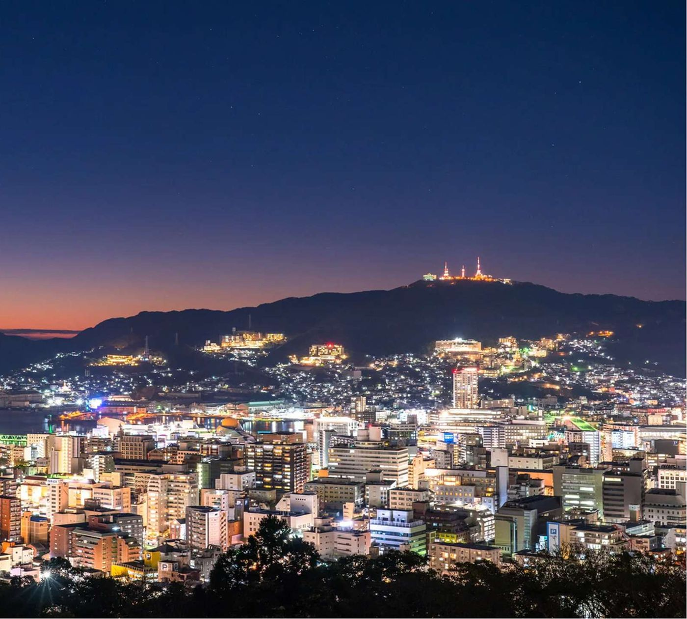
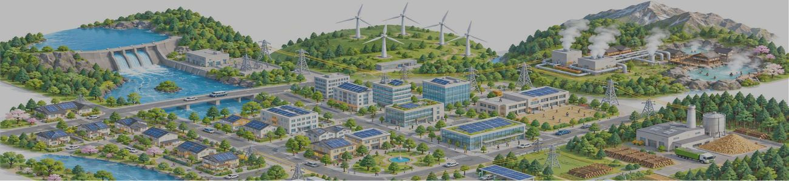
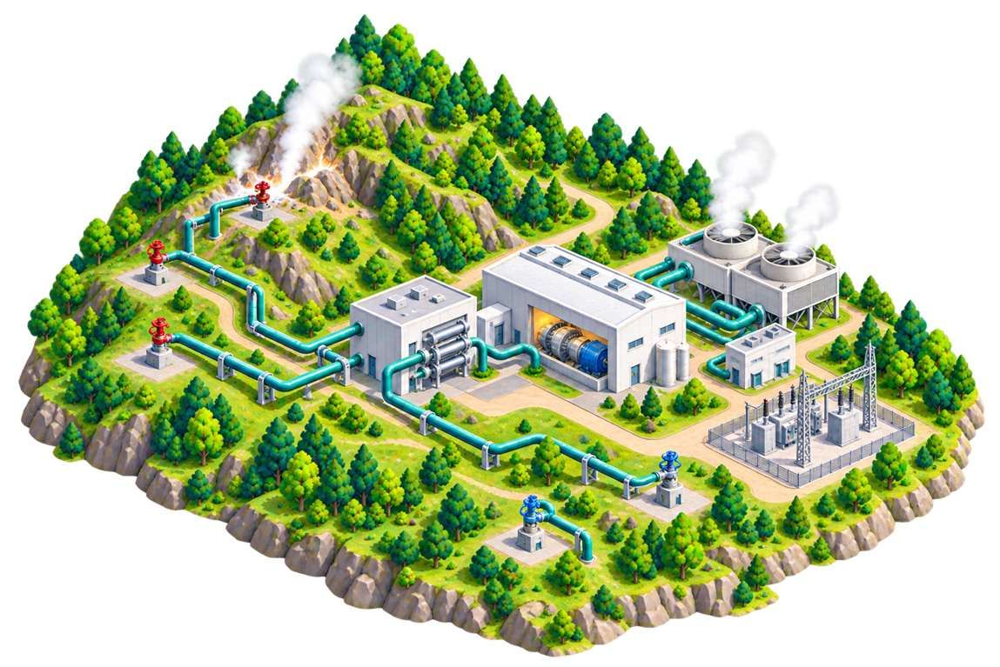
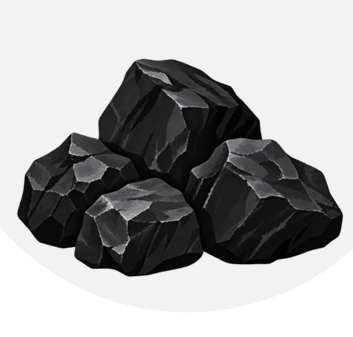
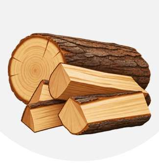
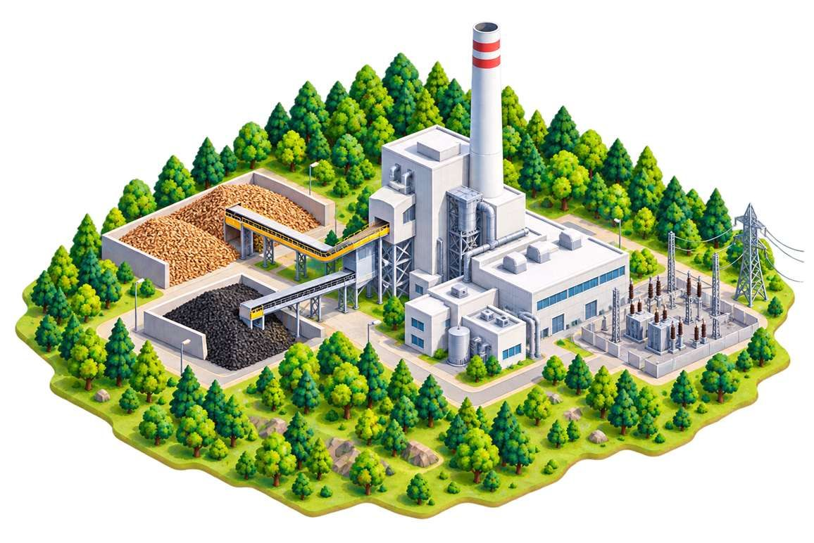
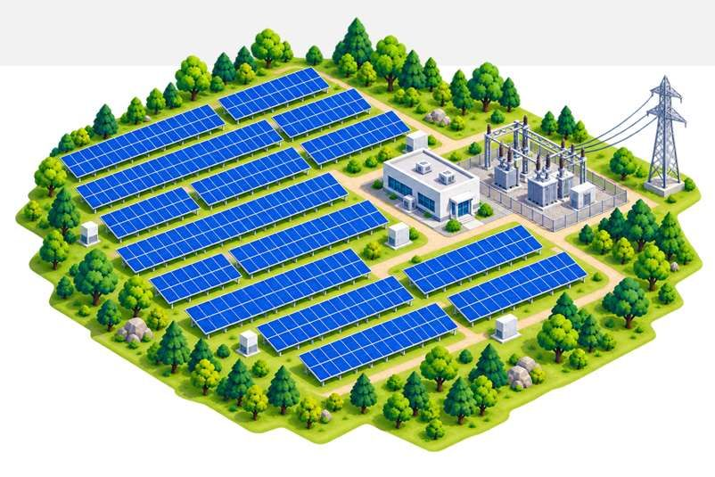
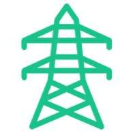

求められる立地条件
半導体工場は大量の電気を24時間必要とするため、「大規模な電力需要に対応できる地域」＋「安定した電力系統が整っている地域」が求められる。


01
九州のくらしと産業を支える電力会社

02
環境へのやさしさ
非化石電源の割合が、トップ。
再生可能エネルギーと原子力を合わせた非化石電源の割合で、九州電力は大手電力会社のなかで全国トップ。発電時にCO2を出さない電源が主力のため、安定していて、環境にやさしい電気になっている。
再エネ原子力
各社の電源構成に占める非化石電源の割合。内訳は資料のグラフより。
03
地球の熱を、暮らしの熱に
日本の地熱資源量
世界第3位
約2,300万kW
国内地熱設備容量に占める割合
約4割
九州電力のシェア
主要各社の設備容量
重要語句
約70〜150℃の比較的低温な温泉や熱水を使い、水より沸点の低い媒体（アンモニア）を温め、その蒸気でタービンを回して発電する仕組み。
九州電力の八丁原バイナリー発電所は、日本初の事業用地熱バイナリー発電所です。

04
無駄にしない
九州は林業が盛んな地域で、素材生産量は全国の約4分の1を占めている。そのため、間伐材や林地残材などの木材資源をバイオマス燃料として活用しやすいという特徴がある。

重要語句
石炭などの化石燃料に、バイオマス（木くずといった有機資源）を混ぜて一緒に燃やし、発電を行う方法。同量の発電を行うために必要な石炭の使用量を減らすことができるため、「エネルギーの使用の合理化」につながる。



05
降り注ぐ恵み
1日あたり
宮崎は秋田より年間約594時間多く、1日平均では約1.6時間長い。また積雪による太陽光発電量の低下も少ない。

重要語句
電気を使う量と発電する量を合わせるために、発電する量をコントロールすること。晴れた昼間などは太陽光発電が増えすぎて電気が余ることがある。九州では太陽光発電が多いため、出力制御が行われることがある。
06
企業の誘致
現在
九州では半導体工場などの建設が進み、電力需要の増加が見込まれている。九州電力は発電するだけでなく、地域の産業発展を支える役割も持つ。
半導体工場は大量の電気を24時間必要とするため、「大規模な電力需要に対応できる地域」＋「安定した電力系統が整っている地域」が求められる。
世界企業は製造時のCO2排出量削減も重視しており、非化石電源が多い九州は産業立地上の強みになる。

電力インフラを強化07
全3問。ここまでの内容から出題します
問題 1
全国平均は33.4%、東京は15.0%。九州電力の65.0%は大手電力会社のなかで最も高い水準です。
問題 2
水より沸点の低いアンモニアを、70〜150℃の熱水で温めて蒸気にし、タービンを回します。
問題 3
まず火力の出力を絞り、揚水・蓄電池を活用します。太陽光・風力の制御は4番目です。
結果
0 / 3 問正解